개인 구조 overlay 부재
user item, tombstone, restore, order override가 없어 source update와 개인 수정을 안전하게 병합할 수 없다.
Flow를 찾고 저장하는 데서 멈추지 않고, 자기 상황에 맞게 구조와 일정을 바꾸고, 실행·완료·완료 취소·외부 전송·재사용하는 전체 lifecycle을 현재 runtime 기준으로 검사했다.
완료 취소, dated item overlay, Calendar 반영, portable export, 완료 Flow 재사용은 실제 동작한다. 반면 날짜 없는 항목의 선택적 일정화와 add/delete/restore/reorder는 일반 사용자 경로에 없고, 완료·skip·exclude가 destination마다 같은 정책으로 설명되지 않는다.
user item, tombstone, restore, order override가 없어 source update와 개인 수정을 안전하게 병합할 수 없다.
날짜 없는 여행 체크리스트 편집에 날짜 입력은 없고 시간·장소·반복만 보인다.
full-flow와 portable-step builder가 done/skip/exclude를 같은 effective state에서 읽지 않는다.
/flow-maps/moving-d30 → /my → /calendar
/my · travel-packing-list
/my · english-study-30day-routine
/my
/f/fridge-cleanout-weekly-plan
/flows → /my
| Lifecycle | Supported | Hidden | Partial | Missing / Blocked |
|---|---|---|---|---|
| 발견·저장 | public/Flow Map 저장, miss draft | - | 저장 ingress별 settings parity | account persistence |
| 개인 수정 | dated overlay projection | title, memo, include/exclude | Flow title/anchor 범위 | item add/delete/restore/order |
| 일정 | dated override, invalid ICS 차단 | time, location, repeat | override reset semantics | undated → dated, source dated → unscheduled |
| 실행 | done, reopen, nested checks | - | skip/exclude/status semantics | generic hold policy |
| Projection | alias/date/memo portable export | - | done/skip/exclude per builder | delete/order policy |
| 회고·재사용 | completion reflection, new run | past runs summary | full history, version review | structural three-way merge |
정본은 capability-matrix.json이다. 이 표는 stakeholder scan을 위한 요약이다.
done, reopened, skipped, held, decision, record value, occurrence state.
include, alias, personal memo, schedule override, user item, tombstone, order.
canonical item, 원문 detail/order/schedule, source refs, published version.
| Effective state | My Flow | Calendar / ICS | Checklist | Sheet / Memo |
|---|---|---|---|---|
| personal alias/date/memo | 표시 | dated row 표시 | 표시 | 표시 |
| top-level done | 표시 | full-flow status만 반영 | portable step은 모름 | portable step은 모름 |
| skipped | 일부 surface | full-flow ICS 제외 | full-flow text에 스킵 | full-flow 상태 열에 스킵 |
| personal excluded | row 제거 | 제거 | 제거 | 제거 |
| deleted/tombstone | 정책 없음 | 정책 없음 | 정책 없음 | 정책 없음 |
| unscheduled | 표시 | 미표시/ICS 불가 | 표시 | blank date로 표시 |
권장 invariant: destination별 builder가 상태를 다시 판단하지 않고, 하나의 effective Item resolver가 inclusion·tombstone·order·schedule·run state를 결정해야 한다.
즉시 reversible. 같은 체크박스로 완료 취소가 가능하다. 현재 가장 명확한 상태 전이다.
되돌리기는 가능하지만 overlay 구성과 run 상태가 서로 다른 surface에 있어 의미를 먼저 정리해야 한다.
아직 없음. source item은 personal tombstone, user item은 soft-delete로 분리하고 즉시 undo와 복구 목록을 제공해야 한다.
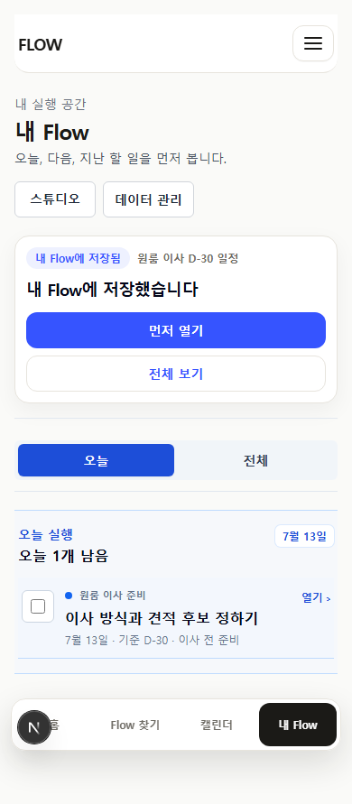
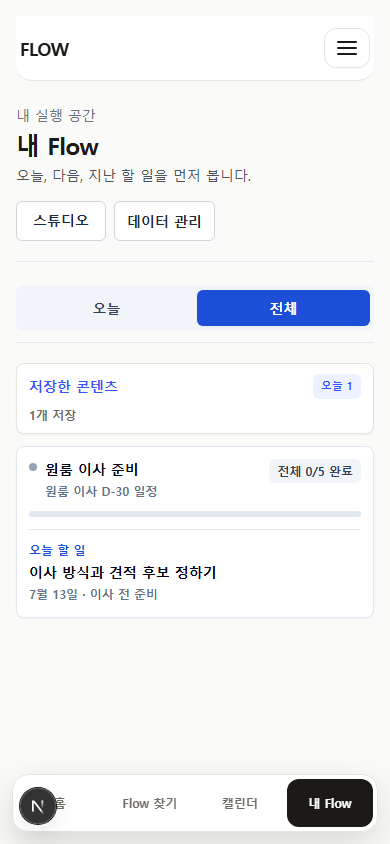
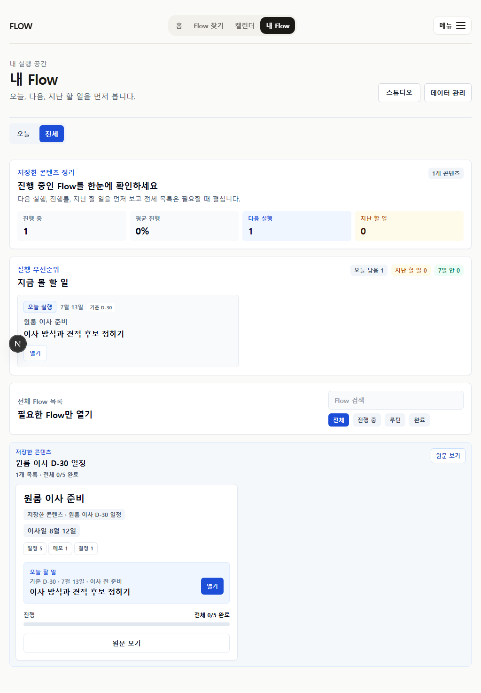
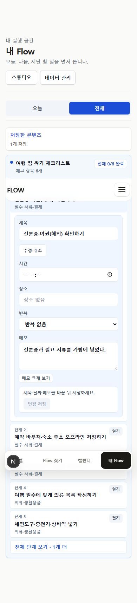
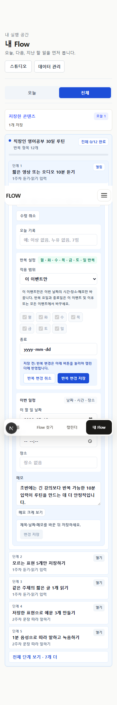
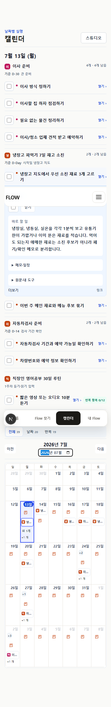
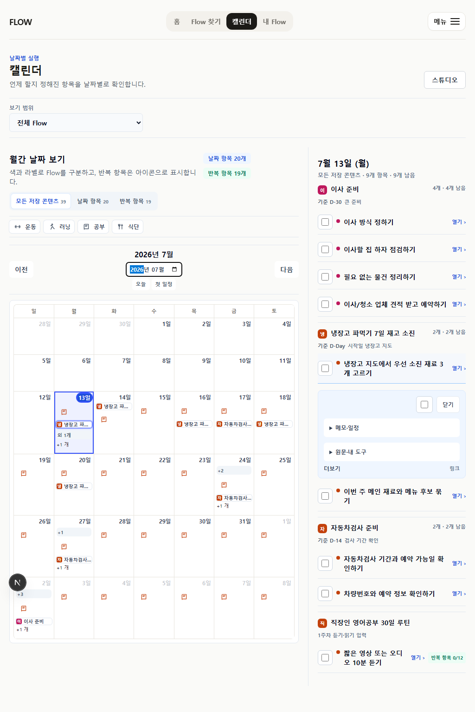
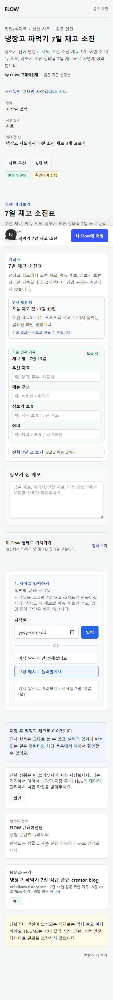
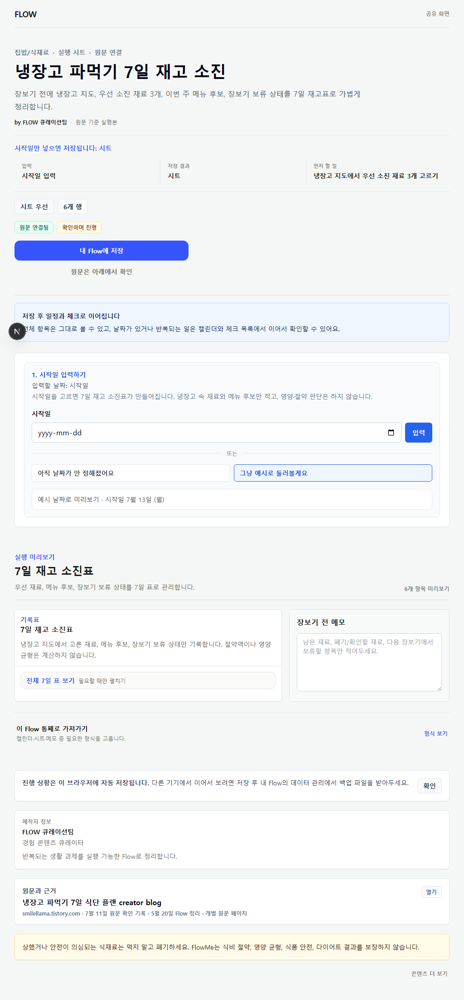
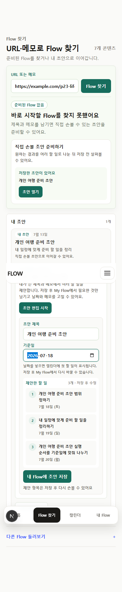
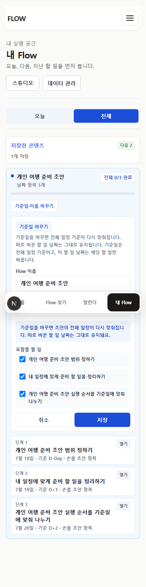
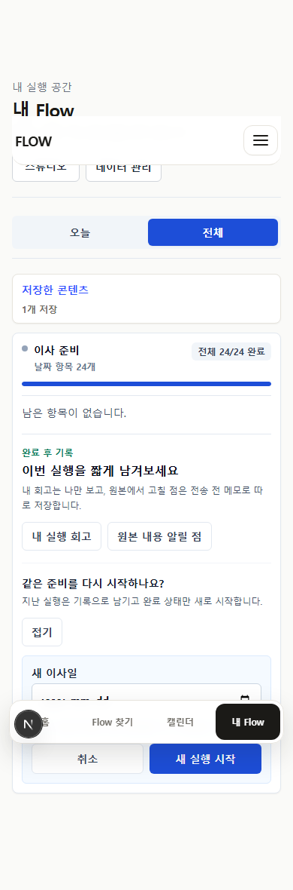
이 패키지의 14개 current screenshot에서 horizontal overflow 0, console error 0. full-page screenshot의 sticky nav 중복 위치는 캡처 합성 특성이며 viewport overlap 판정과 분리했다.
stable Item ID 위에 user item, tombstone, restore, order override를 source와 분리해 저장한다. add/delete/undo/reorder의 최소 UI와 merge-safe contract를 함께 연다.
모든 executable Item에서 undated ↔ dated를 지원한다. source date 복귀와 진짜 날짜 없음을 분리하고 time/repeat/location과 한 editor에서 다룬다.
pending/done/skipped/held를 run state로 고정하고 personal exclude/tombstone과 분리한다. routine occurrence와 Flow completion도 분리한다.
source + overlay + run + occurrence를 한 번 merge해 My Flow, Calendar, checklist, sheet, memo, ICS가 같은 effective Items를 읽게 한다.
source v2와 user item/tombstone/order를 three-way review하고 orphan을 보존한다. 과거 run 상세·재-export도 연결한다.